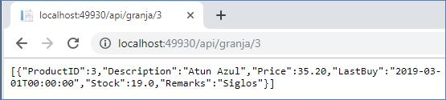

Parte 7
 |
Crear nuevo proyecto. Usar MVC , WebForms , WebApi y Add Unit tests.
 |
Debe Compilarse para probar si está bien construido el proyecto.
Despues de crear el primer modelo de clase, Crear Controllers y Views , Correr el Proyecto para crear el ZMarketContext en la carpeta Models , despues modificar web.config , despues crear las migraciones automaticas.
Modificar en Web.config : DefaultConnection . Compilar proyecto.
Crear clases en paquete Models : Product , DocumentType , Employee
Crear Controladores para los anteriores
modelos.
 |
Para quitar las librerias que no se usan en la clase presionar : Remove and Sort Usings
Crear controlador para product :
Crear control en la carpeta Controller.. Agregar un nuevo data Context.
Presionar en " + " Para agregar un nuevo data Context
Modificar Web.Config
En Web.config . Conexion maneja los usuarios : DefaultConnection
En Web.config . Conexion maneja los datos : Z_MarketContext
Parte 8 : 6:05
Cada tabla crea un nuevo contexto en : Z_MarketContext.cs :
public System.Data.Entity.DbSet<ZMarket.Models.Product> Products { get; set; }
Prepara proyecto para recibir migraciones automaticas.
Usar : Ir a Tools -> NuGet Packge Manager -> Package Manager.
Enable-Migrations -ContextTypeName ZMarketContext -EnableAutomaticMigrations
En ambiente de produccion no es recomendable migracion automatica. En desarrollo si.
Parte 8: 13:20
Crea la carpeta Migrations y el archivo : Configuration.cs
En Configuration.cs :
AutomaticMigrationsEnabled = true;
AutomaticMigrationDataLossAllowed = true;
ContextKey = "ZMarket.Models.ZMarketContext";
Parte 8: 14:00
Modificar : Global.asax.cs. Es donde están las configuraciones de la aplicación.
Database.SetInitializer(
new MigrateDatabaseToLatestVersion<Models.ZMarketContext,
Migrations.Configuration>() );
Quiere decir que cada vez que se arranque verifique si hay que hacer cambios en la database sino lo hace de forma automatica.
Hacer la prueba con la nueva propiedad DeleteMe en clase Product:
para Probar con products : http://localhost:49271/Products
http://localhost:50291/Products . Para que se pueda crear el nuevo campo en la base.
Despues se puede eliminar para que ya no aparezca en la tabla.
En la clase Employee crear el modificador de acceso vi.
pubic vi DocumentType DocumentType { get; set; }
En las clases document type (lado 1)y Employee (lado varios) la relacion es : 1 a varios.
En la clase Employee se ubica la clave Foránea.
Se compila el proyecto para generar las clases y contextos.
Crear en Models las clases : DocumentType y Employee junto con sus contraldores y vistas. Primero compilar el proyecto.
Para crear el controller hacer cick en l clase Employee . Add -> Controller
 |
Cambiar el menu en la carpeta shared archivo : _Layout.cshtml
<li>@html.ActionLink( "Producst" , "Index" , "Product" )</li>
<li>@html.ActionLink( Nombre del Link ,accion a ejecutar , Nombre del controlador )</li>
ApplyFormatInEditMode = false : Cuando vaya a editar no ponga el formato sino no lo reconoce solamente para vista.
0:P2 porcentaje con dos decimales.
ApplyFormatInEditMode = true . para que reconozca el formato como fecha , int etc.
Al Eliminar un DocumentType asignado a varioas customer . No se debe permitir borrarlo porque hay registros qeu quedarian colgados si ese document Type.
Para eso se hacen e Modificaciones en la clase : DocumentTypesController
En el metodo : DeleteConfirmed.
//No permitir borrar en cascada DocumentType y Employee
try
{
db.SaveChanges();
}
catch (Exception ex) {
}
PARTE 12
Crear tablas : Suplier, SuplierProduct , Customer
En Customer Controller ordenar el combo de DocumentType y aparezca el mensaje "Seleccione un Documento", en la Opcion Create.
16:40
Para la relación muchos a muchos se requiere un tabla intermedia que maneje las Keys de las diferentes tablas : SupplierProducts
19:40
En SupplierProducts se crean dos variables virtuales para las clases Suplier y Employee:
public virtual Supplier Supplier { get; set; }
public virtual Product Product { get; set; }
Se crean colecciones virtuales en las clases Supplier y Product
public virtual ICollection< SupplierProducts > SupplierProducts { get; set; }
Borrar en cascada evitar. 6:50
Se sobre escribe el método en la clase ZMarketContext.cs
OnModelCreating(DbModelBuilder modelBuilder).{
modelBuilder.Conventions.Remove<OneToManyCascadeDeleteConvention>();
}
Se revienta la aplicación.
Relacion Muchos Muchos con Modelo Supplier , Product y SupplierProduct
Compilar el Proyecto y Crear un control a proveedores Suppliers.

Codigos Varios en : Parte 12 25:57
Modificar Menu para crear Submenus en : Views _> Shared -> _Layout.cshtml
Parte 13 Inicia Maestro Detalle.
Un CRUD tradicional y dos no tradicionales.
Crear modelo Customer.
Compilar el Proyecto y Crear Controlador de Customer.
Si a parecen estos errores :
Es porque en un modelo se ha modificado la clave principal. Para arreglarlo se debe eliminar la tabla Suppliers, eliminar el control y las vistas de Supplier; crear nuevament e el control y las vistas de supplier y volver a correr el proyecto, sino funciona eliminar completamente la base y volver a correr el proyecto.
Ordenar los documentos por orden alfabético en el formulario crear customer.
En CustomerController.cs en el metodo: public ActioResult create().
ViewBag.DocumentTypeID = new SelectList(db.DocumentTypes.OrderBy(c => c.Description) , "DocumentTypeID", "Description");
El ViewBag sirve para mandar datos de los controladores a las vistas, . DocumentTypeID puede ser cualquier nombre,.
Se manda un objeto SelectList que recibe 3 parametros:
El origen de datos db.DocumentTypes puede ser un array, una lista, una consulta , etc.Cualquiera que implemente la interfaz ICollection.
Campo que contiene la clave DocumentTypeID. Value Member
Campo que muestra lo que contiene el combobox Description. Display Member.
Agregar a la lista : Seleccione un tipo de documento.
Parte 14.
Crear Modelos de Orden Y Detalle de Orden
Crear Enumeracion OrderStatus usado en Orden Status.
Enum OrderStatus
Lado Uno : Order
public virtual Customer Customer { get; set; }
Lado Muchos : Customer:
public virtual ICollection< Order > Orders { get; set; }
Part 15.
Para maestro detalle Tablas :
Product , OrderView , OrderDetail ,
OrderDetail Es el modelo a grabar en datos ( decimal Price , float Quantity , virtual Order, virtual Product )
ProductOrder : Product (float Quantity , decimal value return price * (decimal)Quantity )
Los ViewModels son los modelos enfocados a vistas y no a datos como los anteriores.
Crear en ese folder la clase : OrderView.
Crear en la carpeta Models la clase : ProductOrder.
El nuevo modelo de view model :
OrderView la vista que permite manejar los datos (Customer , List<ProductOrder> Products).
Crear : OrderController.
Orders Controller va a tener todos los modelos ( ActionResult NewOrder() ).
Se guardan en la base las clases : Order y OrderDetail.
Se crean nuevas propiedades para viewbag como la propiedad Message : ViewBag.Message
En 7:40 :
@using ( Html.beginForm( "NewOrder" , "Orders" , FormMethod.Post)
@using ( Html.beginForm( "Boton que dispara el Post" , "Controlador ", Parametros a usar )
Cuando es create se manda : @model Z_Market.Models.Customer
Para Maestro Detalle en un CRUD se afectan varias tablas. Crear modelos personalizados
Crear carpeta ViewModels. Para crear modelo de las ordenes desde el punto de vista de como lo ve el usuario , No como se almacenan los datos.
Mover los archivos AccountViewModels.cs y manageViewModels.cs. a la nueva carpeta.
Crear la carpeta ViewModels la clase OrderView es la vista que permite manejar los datos.
Crear otra clase basada en productos que permite agregar los campos que hacen falta. La clase ProductOrder que hereda de la clase producto en la carpeta Models.
Crear un controlador vacio para Orders : OrdersController
Crear la vista del método NewOrder del controlador OrdersController.
Agregar : public System.Data.Entity.DbSet<ZMarket.Models.Order> Orders { get; set; }
public System.Data.Entity.DbSet<ZMarket.Models.OrderDetail> OrderDetails { get; set; }
A la clase : ZMarketContext
Modificar el Menú y agregar una nueva opción de Operations.
Si se tiene una vista abierta corre en esa vista.
El viewbag es un objeto temporal, no se mantiene en memoria.
Probar la nueva opción.
El error :
Es porque se utiliza la siguiente linea de codigo en el archivo NewOrder.cshtml :
@model IEnumerable<ZMarket.ViewModels.OrderView>
Debe ser:
@model ZMarket.ViewModels.OrderView
Poner un combo que muestre los clientes.
El error:
Es porque falta el viewbag para CustomerID.
Parte 16.
Mandar nombre y apellido completo del cliente.
Probar Si funciona lo anterior
Crear Metodo Post
Crear la acción: AddProduct en el control Control OrdersController.
Crear la vista de la acción AddProduct. Parte 16 14:20
Probar el producto.
Guardar en el GET de la accion NewOrder el objeto : orderView.
Session["orderView"] = orderView;
Y se recupera en el POSt de la accion AddProduct:
var orderView = Session["orderView"] as OrderView;
Parte 18.
Crear mensaje de error con ViewBag.Error.
Mandar el viewbag de ProductID a la vista de la orden. Antes validar que se halla digitado una cantidad. Y verificar que ese producto exista.
Si existe adicionarlo a la lista orderView, para eso crear una variable product Order para despues agregarlo al orderView.
La variable del productOrder metodo addProduct al principio llega vacia.
En la clase OrderView la instruccion : public ProductOrder ProductOrder { get; set; }
Solo es para pintar el titulo de formulario, es un truco.
Pintar la tabla en la vista NewOrder.
 |
Part 19
Error: falta el ViewBag de Customer.
part 20.
Guardar todo lo que se ha ingresado.
Part 21.
El error :
 |
No lo debe enviar AddProduct sino al Post de NewOrder
Hacer el siguiente cambio en NewOrder.cshtml.
@using (Html.BeginForm("NewOrder", "Orders", FormMethod.Post))
El error :
Faltó agregar la variable : ProductID = item.ProductID,
al objeto orderDetail.
El error:
Es porque falta el viewbag.
Este error en NewOrder.cshtml es al recorrer la lista está Nula.
Se debe mandar otra vez la lista limpia como en el Get de NewOrder
La Lista debe ir VACIA que es diferente a Nula.
Página 22
Agregar manejo transaccional.
Agregar viewbag de customerID en el catch error de la transaccion
Part 23
[Authorize]
Debe aparecer en los GET de los controller.
[AllowAnonymous] . Pude ingresar cualquier usuario.
[Authorize (Users = " " ) ]
Errores :
Error:
Línea 31: public class _Page_Views_Products_Index_cshtml : System.Web.Mvc.WebViewPage<IEnumerable<KWebStore.Models.Product>>
Debe ser:
En : kwebstore\views\products\index.cshtml
@model IEnumerable<KWebStore.Models.Producto>
El Error:
Crea campos o pregunta por campos que no existen en la tabla de la BD:
An exception of type 'System.Data.Entity.Core.EntityCommandExecutionException' occurred in EntityFramework.SqlServer.dll but was not handled in user code
{"Invalid column name 'Discriminator'.\r\nInvalid column name 'Discriminator'.\r\nInvalid column name 'Discriminator'.\r\nInvalid column name 'Quantity'."}
Solucion :
[NotMapped]
class PersonViewModel : Person
{ public bool UpdateProfile { get; set; }
}
update-database
El Error :
Either the parameter @objname is ambiguous or the claimed @objtype (OBJECT) is wrong.
El Error :
An exception of type 'System.InvalidOperationException' occurred in EntityFramework.dll but was not handled in user code.
Additional information: The model backing the 'KWebStoreContext' context has changed since the database was created. Consider using Code First Migrations to update the database (http://go.microsoft.com/fwlink/?LinkId=238269).
Solucion:
protected override void OnModelCreating(DbModelBuilder modelBuilder)
{Database.SetInitializer<YourDbContext>(null);
base.OnModelCreating(modelBuilder);
}
El Error :
{"There is already an object named 'Customers' in the database."}
Solucion :
En Package Manager Console
Add-Migration Initial -IgnoreChanges
El Error :
{"ALTER TABLE DROP COLUMN failed because column 'Quantity' does not exist in table 'Products'."}
Solucion:
OK, finally I solved my problem.
I added field 'xxx' to table 'yyy' manually in
my database.
Agregar a Producto los campos . Quantity y Discriminator.
Arbol del Proyecto:
 |
|||
Prueba :
Web API.
http://localhost:49930/api/granja/1/2
Parametro para base de datos.
|  |
http://localhost:49930/api/granja/3
Usando IIS :
http://localhost/ProductWebApi/api/granja/1/2